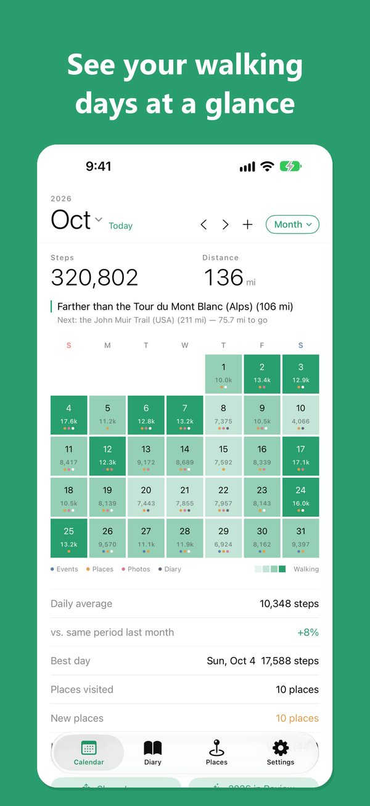
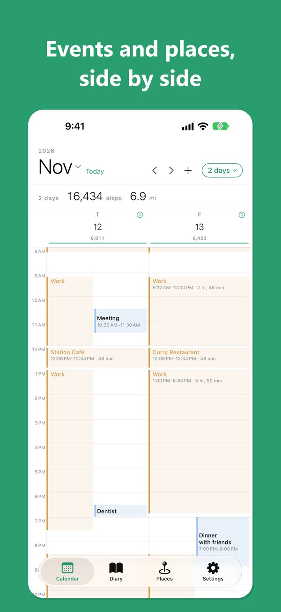
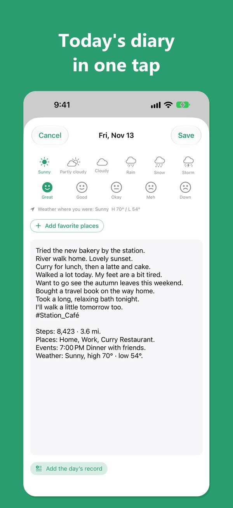
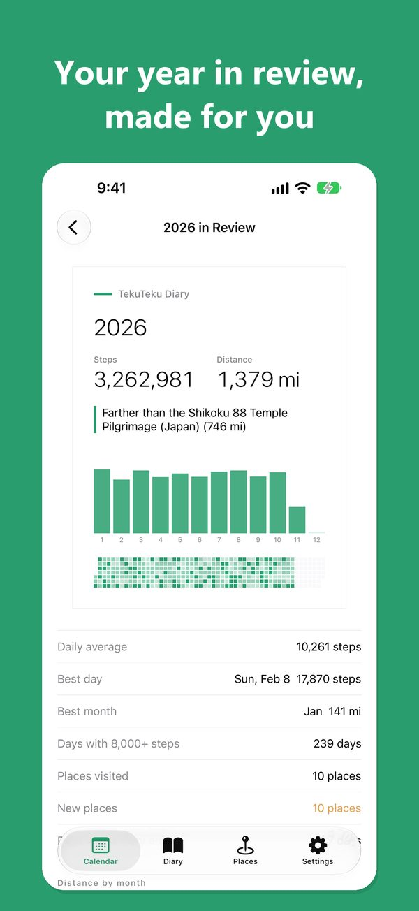
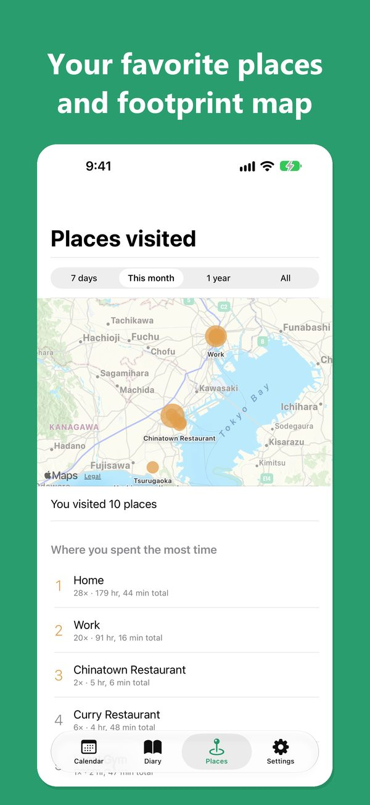
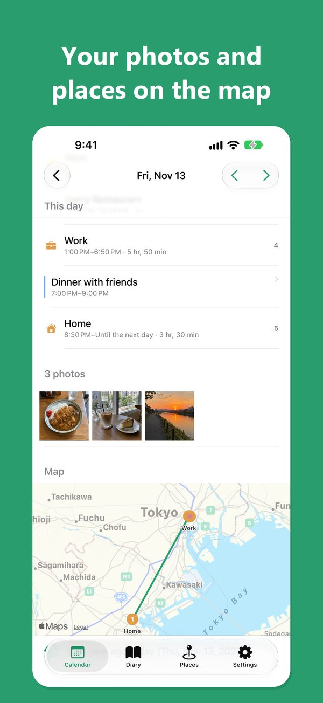
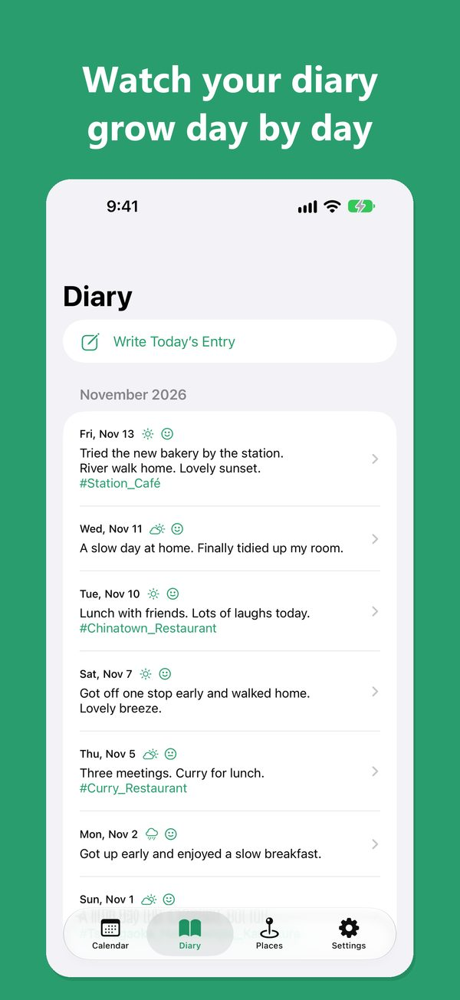

日本語 ・ English ・ Deutsch ・ 한국어 ・ 繁體中文 ・ Español ・ Italiano ・ Français
Your walks become your diary
Your steps, the places you went, your events and the weather — recorded automatically, just by carrying your iPhone. Everything stays on this iPhone.
Download on theApp Store
What it does
TekuTeku Diary turns your everyday walks into a diary — automatically.
WALK, AND IT'S RECORDED
- Daily steps and distance from Health, shown as a heat-map calendar
- Places you visit and how long you stay, recorded in a battery-friendly way
- The weather where you spent the day
WITH YOUR CALENDAR
- See events from the calendars on your iPhone (including Google Calendar) side by side
- Month, week, 5-day, 2-day and 1-day views
- Add and edit events right there

DIARY
- Insert the day's steps, places, events and weather with one tap
- Tap your favorite places to add them as #hashtags
- Weather and mood icons

MEMORIES
- Photos you took that day, and where
- On this day, one year ago
- Your most-visited places and a footprint map
- Year in review, and monthly summaries you can share as images on social media

EASY TO READ
- Three text sizes plus "Large & Bold Text" for easy reading
- 12 color themes and Dark Mode
- Home Screen and Lock Screen widgets

Your records are stored only on this iPhone. No ads, no tracking. Only when looking up the weather, a location rounded to about 1 km is sent to Apple's weather service.
The last 32 days are free to view in full. Unlock everything before that with a one-time purchase — no subscription. Diary, events, photos and backup are always free.
Screens


FAQ & support
Places aren’t being recorded.
Go to iPhone Settings → TekuTeku → Location and choose “Always”. With “While Using the App”, places aren’t recorded while the app is closed.
A place I only walked past was recorded.
Short stays where you kept walking are hidden automatically. If one remains, swipe it left in the day view to delete it, or long-press it to hide it.
Steps don’t appear.
In the Health app, tap your profile (top right) → Apps → TekuTeku and turn on Steps and Walking Distance.
How do I restore my purchase?
Use the restore button in the purchase section of the app’s Settings.
For bug reports and requests, please email us. It helps if you include your device and iOS version.
MORK STUDIO: morkstudio@icloud.com